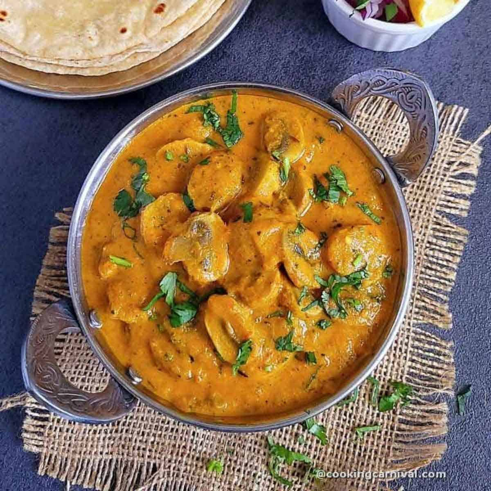

Mushroom Masala | Mushroom Curry

About this dish
Mushroom masala is a lip-smacking Indian curry.It is curried dish of mushrooms simmered in aspicy and fragrant gingery-garlicky onion tomato masala.
This Mushroom Masala recipe is an easy, delicious Curry made with white button mushrooms and spices like garam masala,cumin powder,coriander powder and mint leaves.
Ingredients Required
- Button Mushrooms
- Yellow Onions, ginger, and garlic
- Tomatoes
- Spices - turmeric, Kashmiri red chili powder, and homemade garam masala
- Mint and Coriander leaves
- Cashews
Steps
- Soak cashews in lukewarm water for 10 minutes. Do not skip this as it will ensure a creamy gravy consistency.
- Drain and transfer them to a blender jar along with ginger paste, garlic paste, poppy seeds, and onions. Grind to make a smooth paste. Transfer to a bowl.
- Go the same blender jar, add the tomatoes and green chillies. Grind to make a smooth puree.
- Turn on the Instant pot in saute mode. Add oil or vegan ghee and once it's hot, add the onion paste. Cook for 30 seconds..
- Crush Kasuri methi between your palms and add it to the pot. Mix and cook for another 30 seconds.
- Then add the tomato puree to the pot along with salt. Mix and cook for 30 seconds.
- Followed by the spices like turmeric, coriander powder, paprika, and garam masala.
- Rinse the button mushrooms and then add them to the pot.
- Give it all a good mix. There is no need to add more water. Cancel the saute mode. Close the lid with the valve in the sealing position. Pressure cook in manual mode for 4 minutes.
- Lastly, garnish with cilantro. Mix and serve.
Home Page